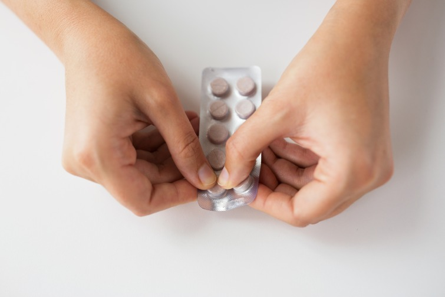

Чи можна хоч щось зробити при ядерній небезпеці?
Якщо коротко, то так. Старий жарт "При ядерній небезпеці варто замотатись в простирадло та повзти в бік кладовища" – виник в радянські часи. І як багато що з того часу – не зовсім правда.
Уявімо, що аварія на ЗАЕС все ж таки сталася. І уявімо, що вона застала вас вдома.
Найкращою рекомендацією в цьому випадку буде і надалі перебувати всередині , поки не буде офіційних рекомендацій діяти інакше.
"Перше, що потрібно усвідомити. Ядерні вибухи призводять до значної кількості жертв та руйнацій саме через факт вибуху. Потім додається ще й вплив радіації. За останні пів року ми вже багато разів чули, що робити, щоб убезпечити себе в разі вибуху.
Та ми не можемо побачити радіацію й відчути її на смак. Уявіть, що це пил. І вам треба якнайменше контактувати з цим пилом. Якщо ви вже опинились всередині, то не виходьте на вулицю, закрийте всі шпарини, загерметизуйтеся", – каже Катерина Шаванова.
Важливо:
- пити лише бутельовану воду;
- вживати лише ту їжу, яка не контактувала з відкритим повітрям (наприклад, консерви);
- запастися препаратами від хронічних захворювань;
- заліпити скотчем усі щілини на вікнах;
- якщо ви потрапили в приміщення з вулиці – помитися та зняти одяг, який запакувати в пакети чи поліетиленові мішки.
Це база , яка знадобиться всім і може знизити негативний вплив радіації.
Олена Паренюк додає, що у разі застосування ядерної зброї спочатку ми мали би відчути звукову та ударну хвилю безпосередньо від вибуху.
Радіонукліди "приходять" пізніше. Так само з вибухом на атомній станції.
"Якщо ви не бачите, наприклад, "ядерного гриба", самого вибуху, то у вас є кілька хвилин, щоб добігти до укриття, сховатися та загерметизуватися.
Багато у кого наразі пластикові вікна, вони мають літній режим і зимовий режим. При ядерній загрозі вам потрібен зимовий режим", – розповідає Олена Паренюк.
Чи варто мені швидко застрибнути в авто та евакуюватися?
Не найкраща ідея, вважають експертки.
По-перше, не лише вам прийде це в голову. Ми вже знаємо, як це – стояти в заторі після початку повномасштабної війни.
По-друге, важко зрозуміти, а куди саме бігти. Напрямок вітру може змінитися, і ось вам вже треба змінювати напрямок евакувакуації.
"Якщо починається паніка, вам треба дуже ретельно зважити ризики. Наскільки швидко ви зможете рухатись? Чи не зміниться напрямок вітру? Чи не випаде дощ? Це дуже ризиковано.Найкраще все ж таки залишитися вдома хоча б протягом наступних 24 годин, якщо немає інших офіційних рекомендацій" , – вважає Шаванова.
Олена Паренюк погоджується і зауважує, що якщо така ситуація трапляється влітку, подумайте, як довго можна пробути в машині без кондиціонера?
"Машину неможливо герметизувати. За першу добу доза опромінення, яку можна отримати від викинутих в результаті викиду радіонуклідів, зменшується в 10 разів через розпад короткоживучих ізотопів. Дуже важливо: якщо катастрофа таки станеться, уряд буде надавати рекомендації. Їх точно варто буде дослухатися", – каже Паренюк.
Ні. Не треба пити йод про всяк випадок.
Після ядерної аварії може бути рекомендований прийом калію йодиду.
Зазвичай одноразово, в рідкісних випадках – повторно.
Де брати калій йодид у разі потреби?
Держава закупила необхідну кількість йодиду калію. Кожен регіон отримав необхідну кількість з розрахунку чисельності населення. У разі аварії будуть оперативно визначені пункти його видачі,найближчі до місця проживання людей.
Якщо аварія вже сталася, категорично не рекомендовано залишати місце укриття до офіційних повідомлень місцевої влади. Так можна наразитися на ще більшу небезпеку. У будь-якому випадку варто чекати сповіщень від місцевої влади.
Кому і в яких дозах потрібно приймати йодиду калію?
- діти до 1 місяця (немовлята й діти, які перебувають на грудному вигодовуванні) – 16 мг,
- діти від 1 місяця до 3 років – 32 мг,
- діти від 3 до 12 років – 62,5 мг,
- підлітки від 13 до 18 років, дорослі до 40 років, вагітні та матері, які годують грудьми – 125 мг.
Людям старшим за 40 років калій йод не призначають! Просто тому що його ефективність і ризики раку щитоподібної залози вже не такі високі в цьому віці.
Які наслідки прийому йодиду калію?
Тимчасова блокада функції щитоподібної залози та одноразове введення йодовмісних препаратів практично не позначається на стані здоров'я дітей та дорослих. Але якщо приймати такі препарати протягом тривалого часу і у неправильному дозуванні, підвищується ризик зниження функції щитоподібної залози.
Отже, приймати йодовмісні препарати для профілактики не варто.
Чи врятує йод від променевої хвороби?
Ні. Калію йодид захищає конкретний орган: щитоподібну залозу.
Але що таке променева хвороба? Фактично, це ситуація, коли організм не справляється з ураженнями,які стаються через вплив радіації.
"Наш організм складається з клітин, і в клітинах відбувається настільки багато уражень, що механізми репарації, тобто полагодження клітинних стінок, просто не спрацьовують.
потроху починають відмовляти системи організму. Найбільше впливу радіації підвержені клітини,що активно діляться.
А які клітини у нас інтенсивно діляться? Насамперед стовбурові клітини в кістковому мозку.Далі йде епітелій шкіри та епітелій всередині нас", – каже Паренюк.
Вона пояснює, при першому ступеню променевої хвороби йдеться про дозу в один зіверт.
За рік в нормі людина має отримати з додаткових джерел не більше, ніж 1 мілізіверт. При цій дозі починаються проблеми з кров'ю.
Якщо доза перевищує 2,5-3 зіверти, людина має проблеми з шлунково-кишковим трактом, бо епітелій,який бере участь в травленні, просто не справляється зі своїми функціями. Через це власне і виникає блювання, нудота та інші симптоми.
"Ну і надзвичайно великі дози – понад 10 зівертів – призводять до того, що називається "смерть під променем". Щільність іонізації в цьому випадку така висока, що імпульси від мозку просто не проходять далі. Мозок перестає контролювати тіло, тому люди можуть неадекватно себе поводити: сміятися, плакати без причини тощо", – додає вона.
Проте науковиці заспокоюють: щоб отримати променеву хворобу, треба отримати просто шалені дози радіації. Це не так просто, якщо ви цивільна людина.
Якщо я зазнав впливу радіації, у мене обов'язково буде рак?
Ні, не обов’язково, адже багато що залежить від того, яку саме дозу радіації ви отримали,протягом якого часу і ще від низки факторів.
Отож заявляти щось категорично та робити прогнози – абсолютно некоректно.
"Є така фраза: ми всі помремо від раку, але не всі до нього доживуть. Сучасні методи лікування раку дуже розвинулись. Зокрема, бо відомі наслідки бомбардування Хіросіми та Нагасакі.
Так, ризики в окремих випадках можуть підвищитись. Але варто пам'ятати, що після чорнобильської катастрофи довели лише підвищення ризику раку щитоподібної залози у дітей", – пояснює Шаванова.
Олена Паренюк також каже, що рак виникає через певну генетичну мутацію в клітині. І радіація– це один з факторів.
Але і куріння – це один з факторів.